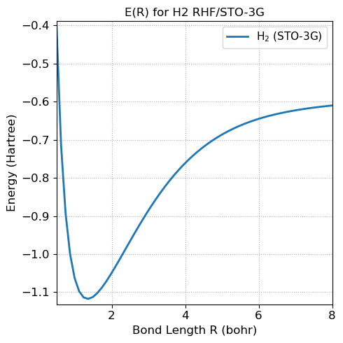

5.3.14. Week 11 Hands-On: Refactoring an H\(_2\) Hartree–Fock Script into a Python Class#
5.3.14.1. Motivation#
Your earlier H\(_2\) Hartree–Fock notebook works, but it is written in a single-script style:
system setup, integrals, matrix construction, and diagonalization are all mixed together,
the basis is treated as non-orthogonal, but that is not made explicit,
the code is harder to reuse for a different bond length or a slightly different basis.
In this lesson, we will reorganize the code into a small, reusable Python class.
That will make it easier to:
change the H–H bond length,
reuse the code for multiple calculations,
expose the role of the overlap matrix and basis orthogonalization clearly.
5.3.14.2. Learning goals#
By the end of this notebook, you should be able to:
explain what a Python class is,
distinguish between attributes and methods,
explain why the AO basis for H\(_2\) in STO-3G is not orthogonal,
explain why your original notebook can still work without explicitly orthogonalizing the basis,
implement symmetric orthogonalization,
wrap the Hartree–Fock workflow into a small Python class,
run an SCF calculation and extract orbital energies and the total energy.
5.3.14.3. Plan for today#
We will:
Construct a python class to describe and quantify aspects of a rectangle
build the needed one- and two-electron integrals for a minimal H\(_2\) STO-3G model,
build a
Basisclass to contain all of the information necessary to define the basis functionsdefine a class
H2RHF,add a method for symmetric orthogonalization,
run the SCF cycle,
Compute and plot \(E(R)\) vs \(R\),
leave you with a few extension exercises.
5.3.14.4. Part 1. A toy example: introducing Python classes#
Before doing Hartree–Fock, let us introduce classes with a simple example. A class is a way to bundle together:
data describing an object, and
functions that operate on that object.
For a first example, consider a Rectangle.
class Rectangle:
def __init__(self, width, height):
self.width = width
self.height = height
def area(self):
return self.width * self.height
def perimeter(self):
return 2 * (self.width + self.height)
def rescale(self, factor):
self.width *= factor
self.height *= factor
def summary(self):
print(f"Rectangle(width={self.width}, height={self.height})")
print(f"Area = {self.area()}")
print(f"Perimeter = {self.perimeter()}")
box = Rectangle(3.0, 2.0)
box.summary()
print("\nNow rescale by a factor of 1.5\n")
box.rescale(1.5)
box.summary()
Rectangle(width=3.0, height=2.0)
Area = 6.0
Perimeter = 10.0
Now rescale by a factor of 1.5
Rectangle(width=4.5, height=3.0)
Area = 13.5
Perimeter = 15.0
5.3.14.4.1. What to notice#
This class has:
attributes:
width,heightmethods:
area,perimeter,rescale,summary
The special method __init__ is the constructor.
It runs when we create the object:
box = Rectangle(3.0, 2.0)
5.3.14.5. Why this matters for scientific programming#
A scientific script often starts as one long block of code.
Refactoring into a class helps because it keeps together:
the inputs,
the intermediate matrices,
the final results,
and the operations used to compute them.
That is exactly what we want for a Hartree–Fock code.
5.3.14.6. Part 2: Creating H2 HF Python Class#
5.3.14.6.1. But first: why explicit orthogonalization was not strictly necessary before#
In your original notebook, the atomic-orbital basis is non-orthogonal because the two 1s-like basis functions on the two H atoms overlap, so the overlap matrix \(\mathbf S\) is not the identity.
However, your notebook still works for two reasons:
We manually built normalized bonding and antibonding combinations for the coefficient matrix $\( \psi_g \propto \phi_A + \phi_B, \qquad \psi_u \propto \phi_A - \phi_B, \)\( with normalization factors containing the overlap \)S_{12}$.
We then diagonalized something equivalent to the generalized eigenvalue problem $\( \mathbf F \mathbf C = \mathbf S \mathbf C \boldsymbol{\varepsilon}. \)\( Writing this as \)\mathbf S^{-1}\mathbf F \mathbf C = \mathbf C \boldsymbol{\varepsilon}$ avoids an explicit orthogonalization step.
So: orthogonalization was not absent mathematically — it was simply handled implicitly through the generalized eigenvalue problem and through your symmetry-adapted MO coefficients.
That said, for cleaner and more robust code, it is usually better to orthogonalize explicitly using $\( \mathbf X = \mathbf S^{-1/2}, \)\( then transform the Fock matrix: \)\( \mathbf F' = \mathbf X^{T}\mathbf F\mathbf X. \)\( Because \)\mathbf F’\( is symmetric, you can diagonalize it with `numpy.linalg.eigh`, which is numerically cleaner than diagonalizing \)\mathbf S^{-1}\mathbf F$ directly.
5.3.14.7. 1. Helper functions for s-type Gaussian integrals#
We will work with contracted 1s STO-3G basis functions on each hydrogen atom.
Each contracted basis function is a linear combination of three primitive Gaussian 1s functions.
The formulas below are standard for s-type primitive Gaussians.
We define:
overlap integrals,
kinetic energy integrals,
electron–nuclear attraction integrals,
two-electron repulsion integrals.
For this lesson, the goal is not to derive every formula from scratch, but to organize them so that the Hartree–Fock code becomes reusable.
# load required libraries
import math
import numpy as np
from scipy.special import erf
def boys0(t):
"""Boys function F0(t)."""
if t < 1e-12:
return 1.0
return 0.5 * math.sqrt(math.pi / t) * erf(math.sqrt(t))
def gaussian_product_center(alpha, A, beta, B):
p = alpha + beta
return (alpha * A + beta * B) / p
def primitive_overlap(alpha, A, beta, B):
A = np.asarray(A, dtype=float)
B = np.asarray(B, dtype=float)
Rab2 = np.dot(A - B, A - B)
pref = (2 * alpha / np.pi) ** 0.75 * (2 * beta / np.pi) ** 0.75
return pref * (np.pi / (alpha + beta)) ** 1.5 * np.exp(-alpha * beta / (alpha + beta) * Rab2)
def primitive_kinetic(alpha, A, beta, B):
A = np.asarray(A, dtype=float)
B = np.asarray(B, dtype=float)
Rab2 = np.dot(A - B, A - B)
reduced = alpha * beta / (alpha + beta)
return reduced * (3 - 2 * reduced * Rab2) * primitive_overlap(alpha, A, beta, B)
def primitive_nuclear_attraction(alpha, A, beta, B, C, Zc):
A = np.asarray(A, dtype=float)
B = np.asarray(B, dtype=float)
C = np.asarray(C, dtype=float)
Rab2 = np.dot(A - B, A - B)
p = alpha + beta
P = gaussian_product_center(alpha, A, beta, B)
Rpc2 = np.dot(P - C, P - C)
pref = (2 * alpha / np.pi) ** 0.75 * (2 * beta / np.pi) ** 0.75
val = pref * (-Zc) * (2 * np.pi / p) * np.exp(-alpha * beta / p * Rab2) * boys0(p * Rpc2)
return val
def primitive_eri(alpha, A, beta, B, gamma, C, delta, D):
A = np.asarray(A, dtype=float)
B = np.asarray(B, dtype=float)
C = np.asarray(C, dtype=float)
D = np.asarray(D, dtype=float)
p = alpha + beta
q = gamma + delta
P = gaussian_product_center(alpha, A, beta, B)
Q = gaussian_product_center(gamma, C, delta, D)
Rab2 = np.dot(A - B, A - B)
Rcd2 = np.dot(C - D, C - D)
Rpq2 = np.dot(P - Q, P - Q)
pref_norm = (
(2 * alpha / np.pi) ** 0.75
* (2 * beta / np.pi) ** 0.75
* (2 * gamma / np.pi) ** 0.75
* (2 * delta / np.pi) ** 0.75
)
pref = pref_norm
pref *= (2 * np.pi ** 2.5) / (p * q * np.sqrt(p + q))
pref *= np.exp(-alpha * beta / p * Rab2)
pref *= np.exp(-gamma * delta / q * Rcd2)
return pref * boys0((p * q / (p + q)) * Rpq2)
def contracted_overlap(alphas, coeffs, A, betas, dcoeffs, B):
s = 0.0
for a, ca in zip(alphas, coeffs):
for b, cb in zip(betas, dcoeffs):
s += ca * cb * primitive_overlap(a, A, b, B)
return s
def contracted_kinetic(alphas, coeffs, A, betas, dcoeffs, B):
t = 0.0
for a, ca in zip(alphas, coeffs):
for b, cb in zip(betas, dcoeffs):
t += ca * cb * primitive_kinetic(a, A, b, B)
return t
def contracted_nuclear_attraction(alphas, coeffs, A, betas, dcoeffs, B, centers, charges):
v = 0.0
for a, ca in zip(alphas, coeffs):
for b, cb in zip(betas, dcoeffs):
for C, Zc in zip(centers, charges):
v += ca * cb * primitive_nuclear_attraction(a, A, b, B, C, Zc)
return v
def contracted_eri(alphas, coeffs, A, betas, dcoeffs, B, gammas, ecoeffs, C, deltas, fcoeffs, D):
val = 0.0
for a, ca in zip(alphas, coeffs):
for b, cb in zip(betas, dcoeffs):
for g, cg in zip(gammas, ecoeffs):
for d, cd in zip(deltas, fcoeffs):
val += ca * cb * cg * cd * primitive_eri(a, A, b, B, g, C, d, D)
return val
5.3.14.8. 2. A Basis Class#
We will start by constructing a Basis class that will store all of the information necessary to define our basis functions.
The main basis set we will use is called STO-3G and stands for Slater-Type-Orbital approximated by Three Gaussians. For Hydrogen, the parameters are:
exponents/
alphas:[0.168856, 0.623913, 3.42525]contraction coefficients:
[0.444635, 0.535328, 0.154329]
I will also include parameters for STO-6G (Slater-Type-Orbital approximated by Six Gaussians) For Hydrogen, the parameters are:
exponents/
alphas:[0.100112, 0.243077, 0.625955, 1.82214, 6.51314, 35.5232]contraction coefficients:
[0.130334, 0.416492, 0.370563, 0.168538, 0.0493615, 0.0091636]
For nuclei other than Hydrogen, the only change (for the sake of today and this code) will be to scale the alphas by a value of \(\zeta^2\) where \(zeta=1\) for hydrogen and is not one for other atoms. The only other nucleus we will consider today is Helium which has \(\zeta=1.6875\) which is coded into the class below.
import numpy as np
class Basis:
"""
Minimal basis-set container for H and He using STO-3G or STO-6G.
Parameters
----------
nuclear_charges : array-like
Nuclear charges for each atom, e.g. [1, 1] for H2 or [2] for He.
basis_type : str
Either 'sto-3g' or 'sto-6g'.
"""
# Base STO-nG parameters for a 1s orbital with zeta = 1
_BASIS_DATA = {
"sto-3g": {
"alphas": np.array([0.168856, 0.623913, 3.42525], dtype=float),
"coeffs": np.array([0.444635, 0.535328, 0.154329], dtype=float),
},
"sto-6g": {
"alphas": np.array([0.100112, 0.243077, 0.625955, 1.82214, 6.51314, 35.5232], dtype=float),
"coeffs": np.array([0.130334, 0.416492, 0.370563, 0.168538, 0.0493615, 0.0091636], dtype=float),
},
}
# Effective Slater exponents
_ZETA = {
1: 1.0, # H
2: 1.6875, # He
}
def __init__(self, charges, centers, basis_type):
self.charges = np.asarray(charges, dtype=int)
self.centers = np.asarray(centers, dtype=float)
self.basis_type = basis_type.lower()
self.n_atoms = self.charges.size
if self.basis_type not in self._BASIS_DATA:
raise ValueError("basis_type must be 'sto-3g' or 'sto-6g'")
base_alphas = self._BASIS_DATA[self.basis_type]["alphas"]
base_coeffs = self._BASIS_DATA[self.basis_type]["coeffs"]
self.n_primitives = len(base_alphas)
self.alphas = np.empty((self.n_atoms, self.n_primitives), dtype=float)
self.coeffs = np.empty((self.n_atoms, self.n_primitives), dtype=float)
for atom in range(self.n_atoms):
Z = self.charges[atom]
if Z not in self._ZETA:
raise ValueError(
f"No {self.basis_type} parameters implemented for nuclear charge Z={Z}. "
"Currently only H (Z=1) and He (Z=2) are supported."
)
zeta = self._ZETA[Z]
self.alphas[atom] = zeta**2 * base_alphas
self.coeffs[atom] = base_coeffs
def get_atom_basis(self, atom_index):
"""
Return the primitive exponents and coefficients for one atom.
"""
return self.alphas[atom_index].copy(), self.coeffs[atom_index].copy()
def summary(self):
print(f"Basis type: {self.basis_type}")
print(f"Number of atoms: {self.n_atoms}")
print(f"Number of primitives per atom: {self.n_primitives}")
for i, Z in enumerate(self.charges):
print(f"\nAtom {i}: Z = {Z}")
print(" alphas =", self.alphas[i])
print(" coeffs =", self.coeffs[i])
To use this class we first declare it and send the appropriate information. We can then extract the necessary components.
# for H2:
print("For H2 sto-3g basis:")
basis = Basis([1, 1], [[0,0,0],[0,0,1.4]], "sto-3g")
basis.summary()
# for HeH+
print("For HeH+ sto-3g basis:")
basis = Basis([2, 1], [[0,0,0],[0,0,1.4]], "sto-3g")
basis.summary()
For H2 sto-3g basis:
Basis type: sto-3g
Number of atoms: 2
Number of primitives per atom: 3
Atom 0: Z = 1
alphas = [0.168856 0.623913 3.42525 ]
coeffs = [0.444635 0.535328 0.154329]
Atom 1: Z = 1
alphas = [0.168856 0.623913 3.42525 ]
coeffs = [0.444635 0.535328 0.154329]
For HeH+ sto-3g basis:
Basis type: sto-3g
Number of atoms: 2
Number of primitives per atom: 3
Atom 0: Z = 2
alphas = [0.48084384 1.77668975 9.75393457]
coeffs = [0.444635 0.535328 0.154329]
Atom 1: Z = 1
alphas = [0.168856 0.623913 3.42525 ]
coeffs = [0.444635 0.535328 0.154329]
5.3.14.9. 3. A small Hartree–Fock class for H\(_2\)#
This class will:
store the molecular geometry and basis information,
build \(\mathbf S\), \(\mathbf T\), \(\mathbf V\), \(\mathbf H_\mathrm{core}\),
build the two-electron integral tensor,
construct the density matrix,
perform symmetric orthogonalization,
run the RHF SCF cycle.
For H\(_2\) in a minimal basis there are 2 basis functions and 2 electrons, so this is a very manageable example.
# The H2 RHF Class using Basis class and helper functions from above
class H2RHF:
"""Restricted Hartree–Fock for H2 with two electrons in a minimal STO-3G basis"""
def __init__(self, bond_length=1.4):
#
self.bond_length = float(bond_length) # bohr
self.n_electrons = 2
self.n_occ = self.n_electrons // 2
# Geometry in bohr
self.centers = np.array([
[0.0, 0.0, 0.0],
[self.bond_length, 0.0, 0.0]
], dtype=float)
# hard coded basis type and charges
self.charges = np.array([1,1],dtype=int)
self.basis_type = 'sto-3g'
# Declare basis
self.nbf = 2
basis = Basis(self.charges, self.centers, self.basis_type)
self.alphas = np.empty((self.nbf,basis.n_primitives),dtype=float)
self.coeffs = np.empty((self.nbf,basis.n_primitives),dtype=float)
for i in range(self.nbf):
self.alphas[i], self.coeffs[i] = basis.get_atom_basis(i)
self.S = None
self.T = None
self.V = None
self.Hcore = None
self.eri = None
self.C = None
self.eps = None
self.P = None
self.E_elec = None
self.E_total = None
def build_one_electron_matrices(self):
S = np.zeros((self.nbf, self.nbf))
T = np.zeros((self.nbf, self.nbf))
V = np.zeros((self.nbf, self.nbf))
for mu in range(self.nbf):
for nu in range(self.nbf):
A = self.centers[mu]
B = self.centers[nu]
S[mu, nu] = contracted_overlap(self.alphas[mu], self.coeffs[mu], A, self.alphas[nu], self.coeffs[nu], B)
T[mu, nu] = contracted_kinetic(self.alphas[mu], self.coeffs[mu], A, self.alphas[nu], self.coeffs[nu], B)
V[mu, nu] = contracted_nuclear_attraction(
self.alphas[mu], self.coeffs[mu], A,
self.alphas[nu], self.coeffs[nu], B,
self.centers, self.charges
)
self.S = S
self.T = T
self.V = V
self.Hcore = T + V
def build_two_electron_tensor(self):
eri = np.zeros((self.nbf, self.nbf, self.nbf, self.nbf))
for mu in range(self.nbf):
for nu in range(self.nbf):
for la in range(self.nbf):
for si in range(self.nbf):
A = self.centers[mu]
B = self.centers[nu]
C = self.centers[la]
D = self.centers[si]
eri[mu, nu, la, si] = contracted_eri(
self.alphas[mu], self.coeffs[mu], A,
self.alphas[nu], self.coeffs[nu], B,
self.alphas[la], self.coeffs[la], C,
self.alphas[si], self.coeffs[si], D
)
self.eri = eri
def build_integrals(self):
self.build_one_electron_matrices()
self.build_two_electron_tensor()
def orthogonalizer(self):
"""Symmetric orthogonalization matrix X = S^(-1/2)."""
evals, evecs = np.linalg.eigh(self.S)
X = evecs @ np.diag(evals ** -0.5) @ evecs.T
return X
def build_density(self, C):
P = np.zeros((self.nbf, self.nbf))
for mu in range(self.nbf):
for nu in range(self.nbf):
for m in range(self.n_occ):
P[mu, nu] += 2.0 * C[mu, m] * C[nu, m]
return P
def build_G(self, P):
G = np.zeros((self.nbf, self.nbf))
for mu in range(self.nbf):
for nu in range(self.nbf):
total = 0.0
for la in range(self.nbf):
for si in range(self.nbf):
total += P[la, si] * (
self.eri[mu, nu, si, la] - 0.5 * self.eri[mu, la, si, nu]
)
G[mu, nu] = total
return G
def electronic_energy(self, P, Hcore, F):
return 0.5 * np.sum(P * (Hcore + F))
def nuclear_repulsion(self):
R12 = np.linalg.norm(self.centers[0] - self.centers[1])
return self.charges[0] * self.charges[1] / R12
def initial_density_from_core(self):
X = self.orthogonalizer()
Fp = X.T @ self.Hcore @ X
eps, Cp = np.linalg.eigh(Fp)
C = X @ Cp
P = self.build_density(C)
return P
def scf(self, max_iter=50, e_tol=1e-10, d_tol=1e-8, verbose=True):
if self.Hcore is None or self.eri is None:
self.build_integrals()
X = self.orthogonalizer()
P = self.initial_density_from_core()
E_old = None
for iteration in range(1, max_iter + 1):
G = self.build_G(P)
F = self.Hcore + G
# Transform to orthonormal basis and diagonalize
Fp = X.T @ F @ X
eps, Cp = np.linalg.eigh(Fp)
C = X @ Cp
P_new = self.build_density(C)
E_elec = self.electronic_energy(P_new, self.Hcore, F)
dP = np.linalg.norm(P_new - P)
if verbose:
print(f"Iter {iteration:2d}: E_elec = {E_elec: .12f} dP = {dP: .3e}")
if E_old is not None and abs(E_elec - E_old) < e_tol and dP < d_tol:
self.C = C
self.eps = eps
self.P = P_new
self.E_elec = E_elec
self.E_total = E_elec + self.nuclear_repulsion()
return self.E_total
P = P_new
E_old = E_elec
raise RuntimeError("SCF failed to converge within max_iter iterations.")
def summary(self):
print("Bond length (bohr):", self.bond_length)
print("\nOverlap matrix S:")
print(self.S)
print("\nCore Hamiltonian Hcore:")
print(self.Hcore)
print("\nOrbital energies (Eh):")
print(self.eps)
print("\nMO coefficients C:")
print(self.C)
print("\nDensity matrix P:")
print(self.P)
print("\nElectronic energy (Eh):", self.E_elec)
print("Total energy (Eh): ", self.E_total)
5.3.14.10. 3. Run the class for H\(_2\) at 1.4 bohr#
We now instantiate the object and run SCF.
This is already much more user-friendly than editing one large script.
h2 = H2RHF(bond_length=1.4)
E_total = h2.scf(verbose=True)
print("\nFinal total energy (Eh):", E_total)
Iter 1: E_elec = -1.831000035705 dP = 3.140e-16
Iter 2: E_elec = -1.831000035705 dP = 0.000e+00
Final total energy (Eh): -1.1167143214193094
h2.summary()
Bond length (bohr): 1.4
Overlap matrix S:
[[1.00000134 0.65931916]
[0.65931916 1.00000134]]
Core Hamiltonian Hcore:
[[-1.12041067 -0.95838123]
[-0.95838123 -1.12041067]]
Orbital energies (Eh):
[-0.57820294 0.67026677]
MO coefficients C:
[[-0.54893366 -1.21146338]
[-0.54893366 1.21146338]]
Density matrix P:
[[0.60265633 0.60265633]
[0.60265633 0.60265633]]
Electronic energy (Eh): -1.8310000357050238
Total energy (Eh): -1.1167143214193094
5.3.14.11. 4. What did orthogonalization buy us?#
The important structural improvement is that we solved the Roothaan equations in a cleaner way:
Build the overlap matrix \(\mathbf S\).
Construct the symmetric orthogonalizer $\( \mathbf X = \mathbf S^{-1/2}. \)$
Transform the Fock matrix $\( \mathbf F' = \mathbf X^T \mathbf F \mathbf X. \)$
Solve the ordinary symmetric eigenvalue problem $\( \mathbf F' \mathbf C' = \mathbf C' \boldsymbol{\varepsilon}. \)$
Transform back: $\( \mathbf C = \mathbf X \mathbf C'. \)$
This is better than directly diagonalizing \(\mathbf S^{-1}\mathbf F\) because:
\(\mathbf S^{-1}\mathbf F\) is not guaranteed to be symmetric,
eighis preferable for symmetric matrices,the code now mirrors what is usually done in Hartree–Fock and quantum chemistry codes.
5.3.14.12. 5. Check the overlap matrix explicitly#
Are the basis functions orthonormal (is the overlap matrix similar to the identity matrix)?
print(h2.S)
print("\nIs S close to identity?")
print(np.allclose(h2.S, np.eye(h2.nbf)))
[[1.00000134 0.65931916]
[0.65931916 1.00000134]]
Is S close to identity?
False
Because the off-diagonal elements are substantial, the basis functions overlap strongly.
That is exactly why orthogonalization is conceptually important, even if your earlier notebook handled it implicitly.
5.3.14.13. 6. A simple extension: scan the bond length#
Because the code is now wrapped in a class, it is easy to repeat the calculation at multiple H–H distances.
# compute energy as a function of bond length
bond_lengths = np.linspace(0.5, 8.0, 62)
energies = []
# loop over R values and compute energies
for R in bond_lengths:
mol = H2RHF(bond_length=R)
energies.append(mol.scf(verbose=False))
# Convert to numpy array
energies = np.array(energies)
#plot
import matplotlib.pyplot as plt
fontsize = 12
plt.figure(figsize=(5, 5))
plt.plot(bond_lengths, energies, linewidth=2, label='H$_2$ (STO-3G)')
plt.xlabel('Bond Length R (bohr)', fontsize=fontsize)
plt.ylabel('Energy (Hartree)', fontsize=fontsize)
plt.title('E(R) for H2 RHF/STO-3G', fontsize=fontsize)
plt.legend(fontsize=fontsize-1)
plt.grid(True, linestyle=':', linewidth=0.8)
plt.tick_params(labelsize=fontsize)
# Tight axis limits (no excess whitespace)
plt.xlim(bond_lengths.min(), bond_lengths.max())
# Optional: tighten y-limits to data range with small padding
ymin = energies.min()
ymax = energies.max(),
padding = 0.02 * (ymax - ymin)
plt.ylim(ymin - padding, ymax + padding)
plt.tight_layout()
plt.show()

5.3.14.14. 8. Short assignment#
5.3.14.14.1. Part A#
Create a Triangle class analgous to our Rectangle class that inputs the appropriate information and is able to compute the area and perimeter of the triangle as well as print a summary.
class Triangle:
"""
A class to store the unique definition of a triangle with functions to compute the area and perimeter of the triangle.
"""
def __init__(self, input_variable_1, input_variable_2, input_variable_3):
""" The initialization function """
### you need to add the rest...
5.3.14.14.2. Part B#
Modify the H2RHF class so that nuclear_charges and basis_type can be passed into __init__ instead of hard-coding them.
5.3.14.14.3. Part C#
Compute and plot E(R) vs R (\(0.5 \leq R \leq 8\) Bohr) for H\(_2\) in the following bases:
sto-3g
sto-6g
Plot both on the same plot and label the plot accordingly. Which has a lower energy and why?
5.3.14.14.4. Part D#
Compute and plot \(E(R)\) vs \(R\) (\(0.7 \leq R \leq 8\) Bohr) for HeH\(^+\) in an sto-3g basis. Describe any differences observed between \(E(R)\) for HeH\(^+\) and H\(_2\) (from above). Why is the asymptotic behavior more correct for HeH\(^+\)?